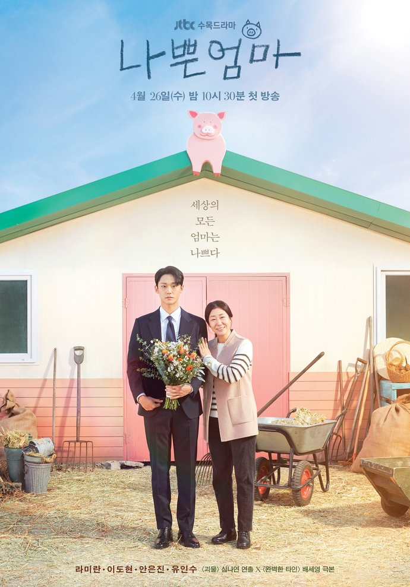
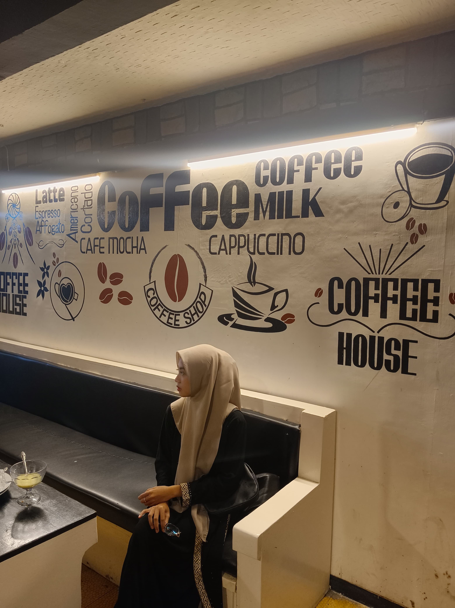
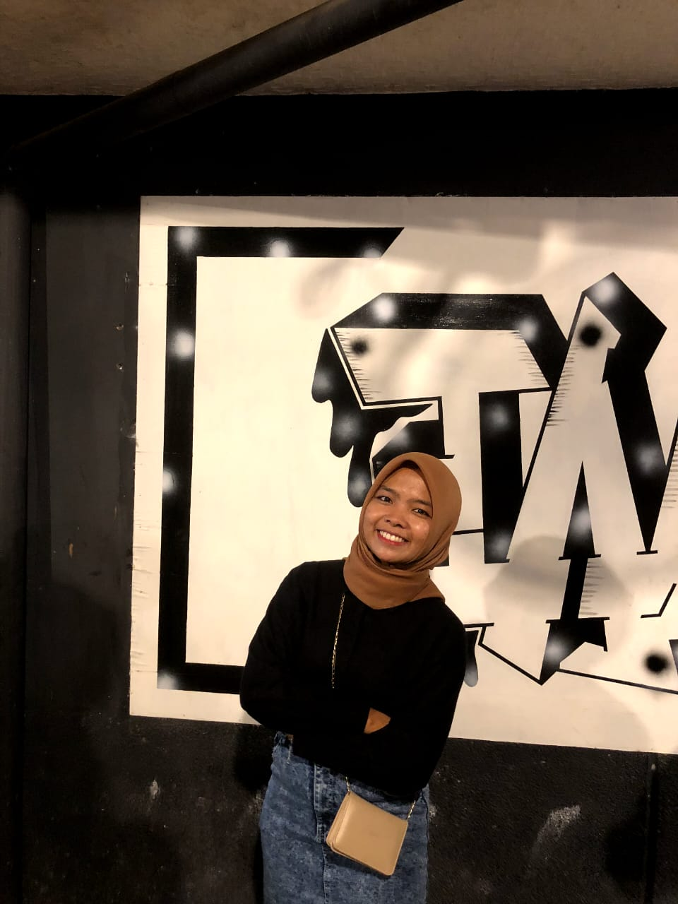
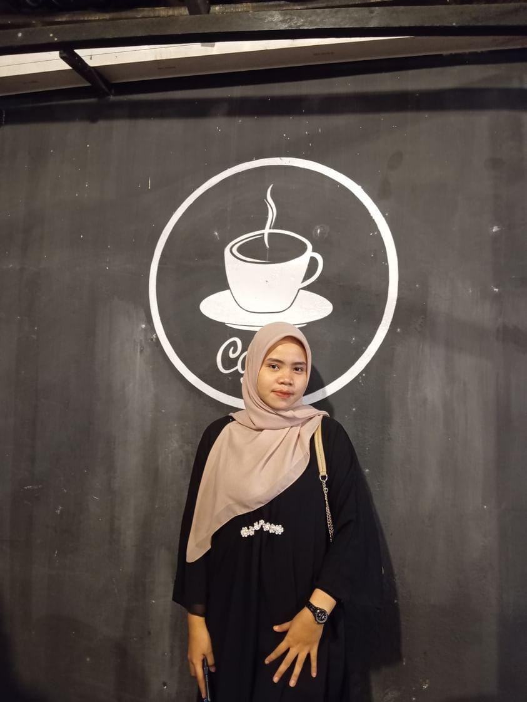
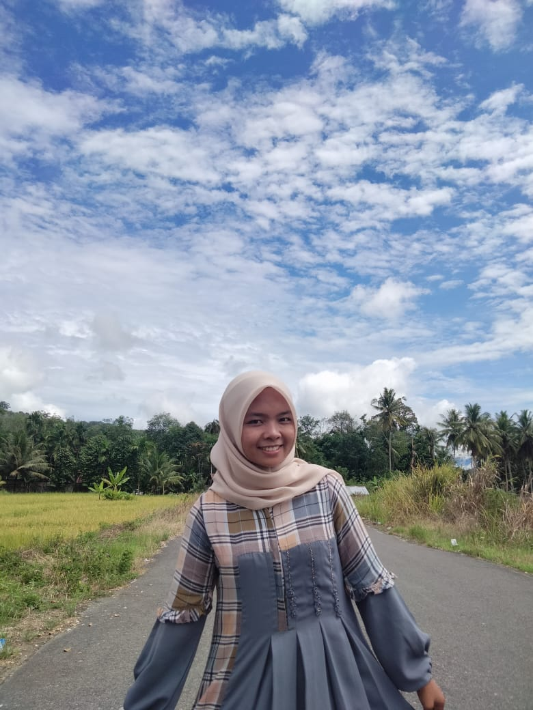
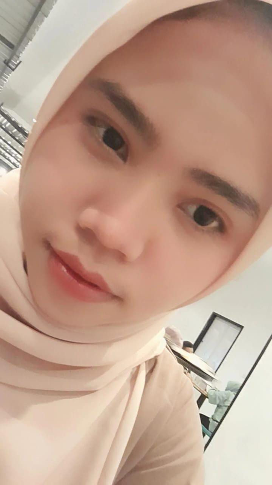
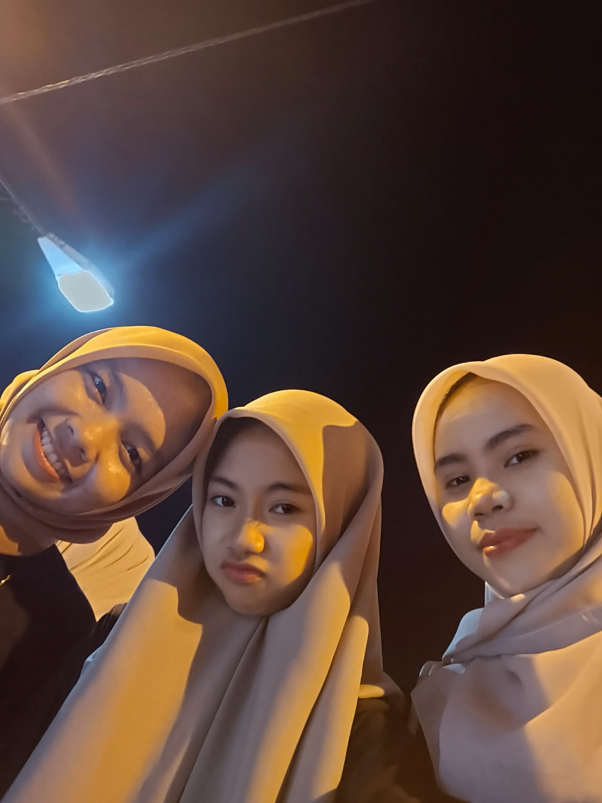

The Good Bad Mother menceritakan tentang seorang peternak babi yang menjadi single parent setelah suaminya meninggal. Peternak babi itu adalah Young Son yang membesarkan anaknya, Kang Ho,seorangdiri.
Meskipun rasa cintanya terhadap Kang Ho sangat besar, namun Kang Ho justru melihatnya sebagai ibu yang jahat karena Young Son mendidik anaknya dengan sangat keras dan mengekang. Sesuatu yang dilakukan agar putranya tidak seperti Young Son.
Setelah Kang Ho dewasa, ia menjadi seorang jaksa yang sangat dingin dan kejam. Saat ia mengejar kariernya, ia berpaling dari sang Ibu yang ia anggap seorang yang jahat.
Suatu hari Kang Ho mengalami sebuah peristiwa yang membuatnya menjadi seperti anak-anak dan mengharuskannya ia kembali kepada ibunya.
Ia juga bertemu kembali dengan teman masa kecilnya, Mi Joo, ia adalah orang yang baik hati dan tidak bisa melihat ketidakadilan. Hidupnya pun berubah bertemu Kang Ho yang kini seperti anak-anak.
Pelajari Lebih LanjutOur Top Tutors

Natasyah Alifia

Riska Amelia

Lamsinar Silalahi


